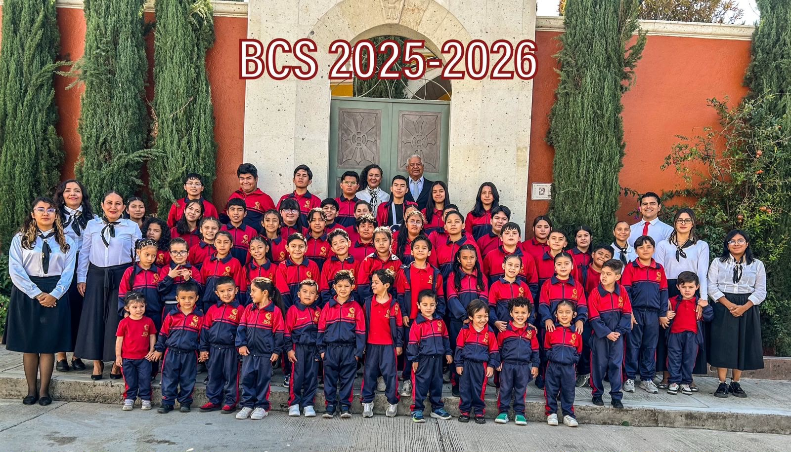
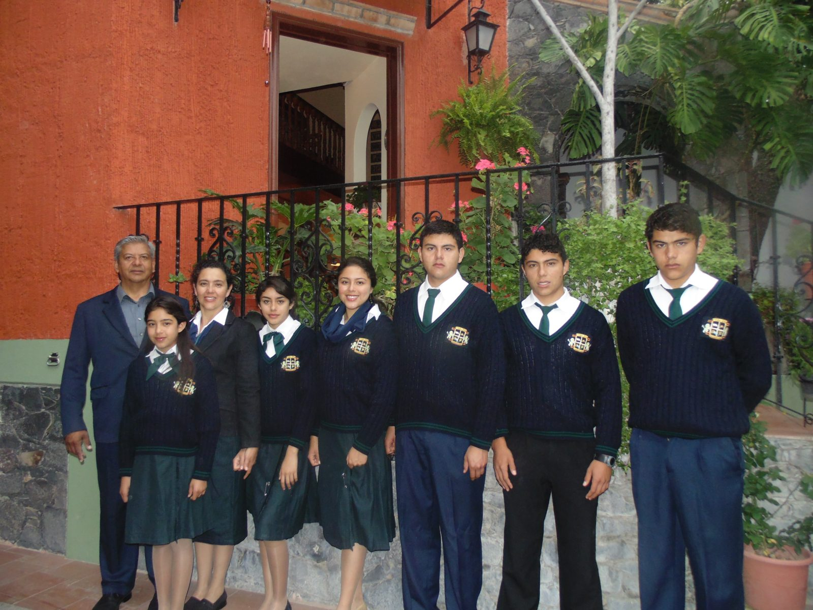
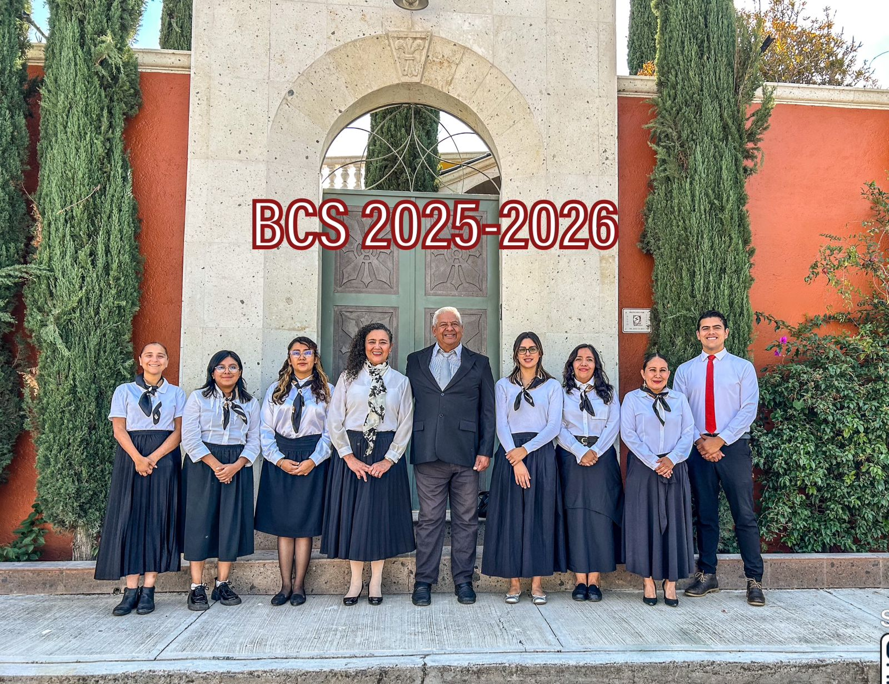
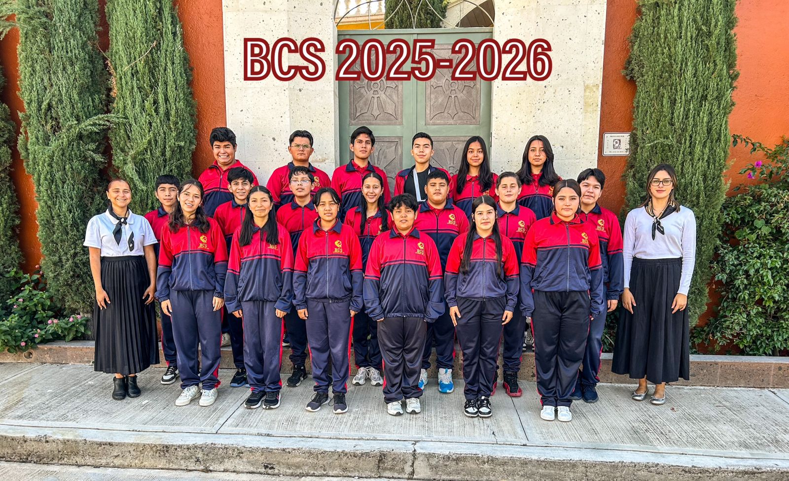
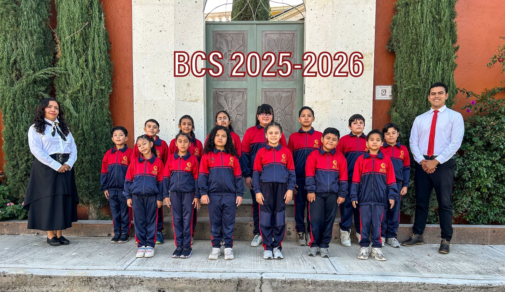
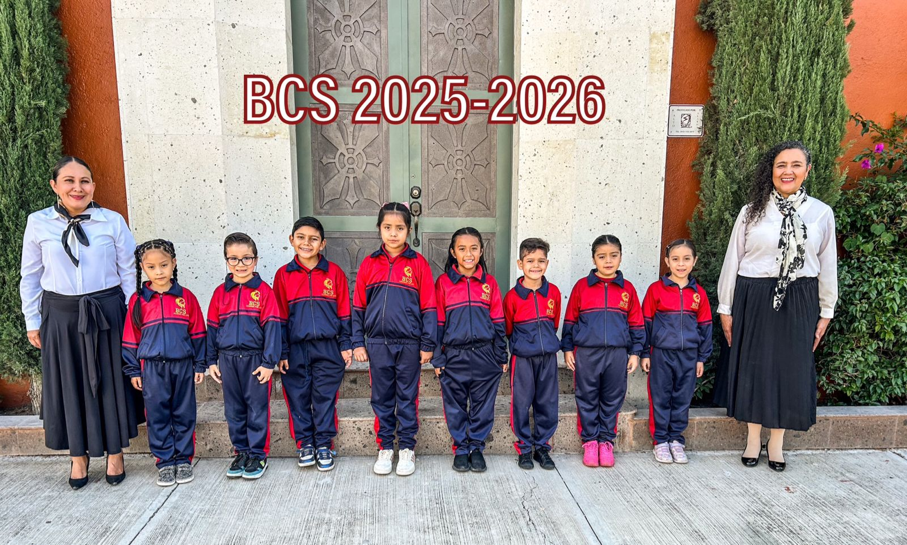
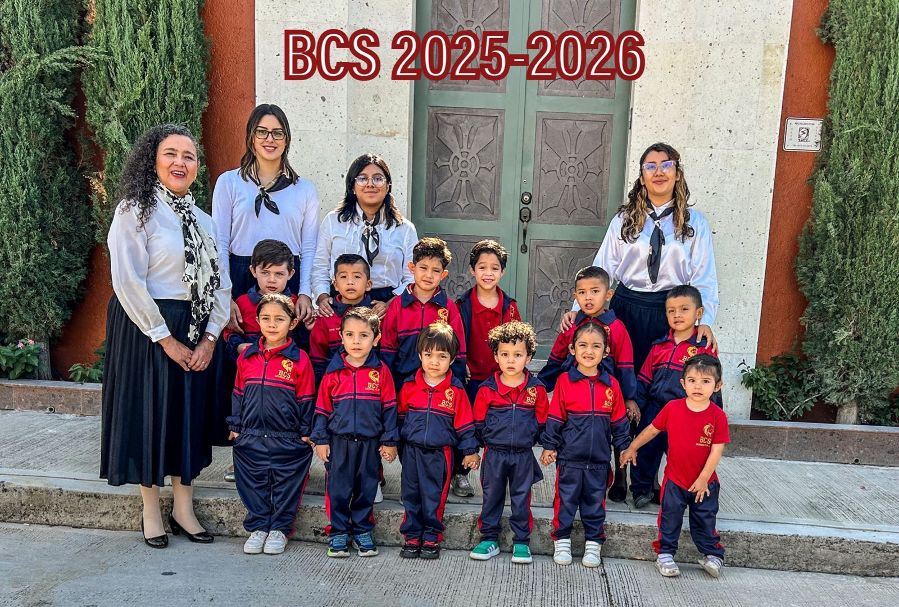

San Miguel de Allende, Guanajuato · Desde 2013
"Todo lo puedo en Cristo que me fortalece."
— Filipenses 4:13
Bereshit Christian School es un centro educativo cristiano bilingüe que acompaña a familias con el programa A.C.E. (Accelerated Christian Education), formando el carácter y el conocimiento de cada alumno de Kínder a Preparatoria.

Bienvenida
Creemos que cada niño tiene el mismo derecho a la educación, pero que ningún sistema educativo es igual para todos. Por eso acompañamos a padres comprometidos con un modelo individualizado, bíblico y de dominio del aprendizaje.

De una familia enseñando a sus 6 hijos en casa, a un centro educativo que hoy sirve a decenas de familias en San Miguel de Allende.
Conoce nuestra historia
Aprendizaje individualizado por nivel de dominio, con integración bíblica en cada materia, usado en más de 140 países.
Cómo enseñamos
Un proceso claro, de la primera entrevista al examen diagnóstico, para encontrar el nivel exacto de cada alumno.
Ver el proceso"Jesús dijo: Dejen que los niños vengan a mí, y no se lo impidan, porque el reino de los cielos es de quienes son como ellos."
Mateo 19:14 (NVI)
Únete

De Kínder a Preparatoria, con arte, música, deportes, convenciones estudiantiles y paseos escolares.
Ver oferta educativa
Calendario de actividades, noticias, testimonios y la vida diaria de nuestros alumnos y familias.
Ver galería
Dona, sé voluntario o apadrina a un alumno. Hay muchas formas de sumarte a esta misión.
Cómo ayudarAlcance
Además de servir a familias en México, nuestra meta es alcanzar donativos, voluntarios y misioneros de Estados Unidos y del mundo, e informar mensualmente lo que Dios está haciendo en nuestra comunidad — en español y en inglés.
Que nosotros nos encarguemos de las boletas, apostillas y diplomas. Tú enfócate en tus hijos.
ContáctanosContáctanos hoy para saber si Bereshit Christian School es el lugar correcto para tu familia.